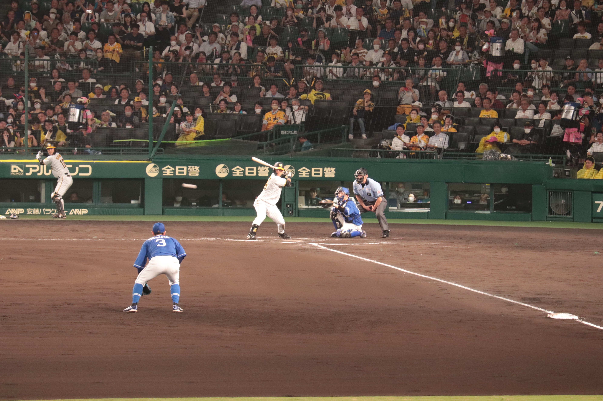

ナンバープレート九九
2026年より開始。阪神タイガースの期待の若手、前川右京。
金本の後継者、将来の背番号6、僕と同じ左利き、ぷるんぷるんのお尻…。
その前川右京の打撃成績のよって貯金されていく仕組み。
ゆくゆくは球界を代表するバッターになって、前川の口座も、僕の口座も潤うはず。
一緒にのし上がっていこうね。前川。(註：前川は僕とは違って、もう十分凄い選手である)
[貯金表]
阪神勝利：100円
出場：100円
安打：100円
二塁打：+200円(二塁打一本の場合は、安打100円+二塁打200円の計300円を計上)
三塁打：+300円
本塁打：+500円
打点：200円
四死球：100円
盗塁：100円
犠打・犠飛・進塁打：50円
お立ち台：3000円(大学生の飲み会一回分)
